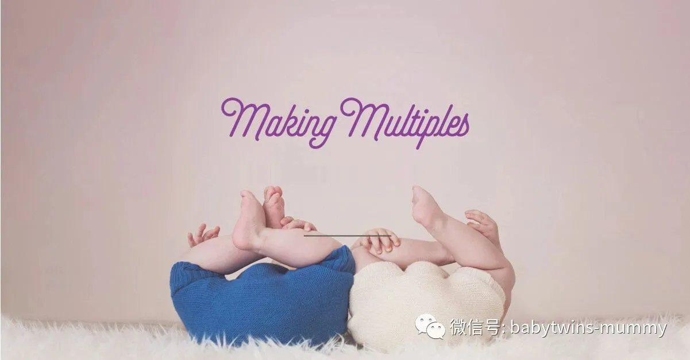
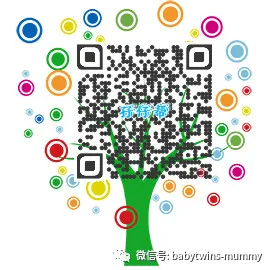

点击上方“孖仔帮”关注我们
孖仔帮
汇集全国各地及海外的（准）双胎妈妈的交流社群
专门针对双胎孕期，喂养，教育等方面的经验分享
孖仔帮期待您的加入！
让我们一起成长，快乐育儿！
文|圆圈妈 图片来源网络
01
孖仔帮的孕期群总是离不开“囤货”。只要一问到“要给两小宝贝囤啥货”，马上七嘴八舌就唠开了。
除了必备的婴幼儿日常用品，我认为有几个硬件设施是必备的！且必须精心挑选才行。
这些必备神器是：七座车，安全座椅，婴儿车，婴儿床，BB凳（宝宝餐椅），爬爬垫。
【七座车】
当圆圈还在娘肚子的时候，圆圈爸还在考驾照，那个时候，我们已经锁定了目标，而且坚定不移。汉兰达！
圆圈爸连续好几个夜黑风高的晚上，还在看汉兰达的车评，视频，论坛，贴吧等无一不横扫一遍。
他对汉兰达的痴迷程度让我几乎产生幻觉“难道我才是那个小三？”。结果在圆圈2周岁的时候，居然阴差阳错买了福特的锐界，一辆超级耗油又笨重的“拖拉机”。
不过看在安全性的份上，我也不计较那么多了。反正我又不懂车，什么涡轮技术，什么发动机，全都跟我无关。我只知道一公里一块钱，我很内伤！
七座的车貌似目前真没有几款可选的了，哈佛，传祺实在啃不下去。据说跑一次千公里就要做一次保养的，这质量还是伤不起啊。再高一个层次唯有汉兰达和锐界，不管外观和实用性都基本满足我那颗粗俗的虚荣心。
因为汉兰达的等待时间最短三个月，就凭圆圈爸那颗蠢蠢欲动的要做“老司机”的心情。难怪他在车展像疯子一样默默抱着汉兰达的驾驶位许久，再深情地扑向了斜对面的锐界展位，然后毫不犹豫交了定金。
锐界真心解放了我的双手，再也不用左右抱一个，压到大腿内伤了。把圆圈往安全座椅一放，分别给他们一辆玩具托马斯或者一本绘画书，我终于可以优哉游哉坐在副驾驶看欧巴剧了。
有时候还捎上圆圈的爷爷奶奶一起出游，满载简直完美。
购买建议
钱少的买哈佛或传祺。爱面子且又手头宽裕的，可以考虑汉兰达锐界。不是外貌协会只关注实用的，可以考虑奥德赛。土豪不差钱的，奥迪Q7或者阿尔法或者随便你买啥豪车，反正钱不是问题。
【安全座椅】
安全座椅的重要性这里就不啰嗦了，不管是一孩还是二孩，为了安全考虑，都强烈建议用安全座椅。
而双胞胎家庭，除了安全因素，更重要的是，解放双手的压轴神器。
圆圈哥俩2岁半的时候，圆圈爸终于从4S店把他的“小情人”开回来了。顺便在保证所有礼品都不要的情况下，顺利讨到两张安全座椅。不好意思，连安全座椅都是送的，圆圈妈真的是抠门到家了
即便如此，安全座椅的作用依然被我发挥到了极致。老早就听说大多数小孩子对安全座椅有抵抗情绪。比如圆圈的表姐，比圆圈大半岁，就是个活生生的例子，只要挨着安全座椅就哭得惊天动地泣鬼神。
因为是买车顺便送的，我们并没有太多的压力，如果圆圈实在抗拒，那就不用呗。反正是送的，压箱底也无妨。
非常出乎意料，圆圈丝毫没有抵触安全座椅的意思。反而非常高兴有自己的专属座位。每次爬上车就嚷嚷着要绑上安全带。
我和圆圈爸对此受宠若惊了很久，居然不费吹灰之力就搞定传说中的棘手问题，让我好生不习惯啊！
圆圈坐上安全座椅，最欢天喜地的人就是我了。真的很想送一面锦旗给发明安全座椅的专家，聊表谢意。
天知道，如果没有安全座椅，我将会多么狼狈不堪。让我两手抱两只，短途还OK ，长途就要命了。圆圈坐得不舒服，我自己也累趴了。如果要自驾游，不得不多带一个大人才能HOLD 住随时突发的事件。
有了安全座椅，每人一个座位，安全又舒服，我可以坐中间的位置，也可以坐副驾驶，随意切换。
遇到突发事件，我也可以腾出双手双脚为圆圈两位小祖宗鞍前马后。
购买建议
国产OR进口，量力而行（看钱袋子做决定）。只要起到保障安全作用均可！
【婴儿车】
双胞胎应该买哪种婴儿车？在这个问题上，很少发生分歧的我和圆圈爸居然因为婴儿车的选择上起争执了。
我认为要买双胞胎专用的双人座婴儿车，因为推着双人座婴儿车，一人可以单独推两个，到楼下小区或者附近公园完全不是问题。其他人等可以在家休息或者做别的事情，可以“人力资源”最优化！最重要是觉得特别拉风。
可是，圆圈爸却一根筋完全否定了我一人推两人出门的“天荒夜谈”。理由是有人会光天化日抢孩子，而且双人推车笨重不方便，进地铁都要找专门的出入口，有些电梯还挤不进去。
思来想去，最后妥协，采纳圆圈爸的意见。后来经过多次经验证明，庆幸没有买双人座婴儿车。我在万科广场亲眼看见一个爷爷推着双胞胎高景观婴儿车卡在电梯里。进不去，出不来，急得爷孙三大哭。
还有，二手闲置群经常有宝妈吐槽高景观双胞胎推车的笨重，实用性差，要转让甩卖的双胞胎婴儿车占了将近一半。
我最后买的是单人座的婴儿车，可躺可坐。本来打算买那种可以拆分的双胞胎婴儿车，但是价格较高，所有积蓄都砸在奶粉和尿不湿上面了。后面等圆圈一岁多，坐得稳当点了，我们的经济也稍微好转点，买了个专供出口的伞车。依然是单人单座的伞车。
这个伞车陪伴着圆圈到今天快三岁了。我和圆圈爸一人推一个，时而一前一后，时而一左一右，时而一上一下，时而并肩齐行，伞车一推，说走就走。走过深圳大大小小的街边小道，公园，海滩，每到之处所向披靡引来一干路人的侧目顿足。
购买建议
优先考虑可拆分的款式，如圣得贝。国产品牌的伞车，好孩子GB。
【婴儿餐椅】
BB凳买的比较晚，圆圈一岁半的时候，才意识到：嗯，好像是时候让他们自己坐着吃了。
挑选BB凳的时候，我遐想了很久，仿佛看见圆圈乖乖滴坐在餐椅上，脖子上挂着围嘴，像小麻雀一样张开嘴巴，吱吱喳喳地吵着要吃。
事实上，圆圈并不喜欢这个“囚禁”他们自由的“坏家伙”。
刚坐上去就大哭。再加上家里老人家的玻璃心，受不了孩子的哭泣。且老人家也一直习惯抱着喂，甚至追着喂也不觉得累。我和圆圈爸给老人家轮流做思想工作，但都徒劳。无奈，我精心挑选的BB凳，刚买回来就被压箱底了。
有一次看到新闻说一个2岁大的小女孩用筷子插着玉米在客厅上边吃边玩，结果不小心摔了一跤筷子插进小女孩的鼻腔了。这个消息让我惊恐了好几个晚上，痛定思痛使出洪荒之力，让BB凳重见天日，勒令两位老人必须严格执行“让孩子坐着吃饭”的铁规！
两老人也被新闻吓得七魂丢了六魄，积极配合我和圆圈爸纠正圆圈哥俩的吃饭问题。最后在多方训练下，圆圈终于习惯BB凳，现在只要一上桌就大声嚷嚷“我的BB凳呢？”
购买建议
宜家或同款。宜家款现在国内很多仿款了，价格59---99上下不等。反正比宜家便宜。质量差不多，不过一分钱一分货啦。我买的杂牌，有点晃，但不影响使用。
【婴儿床】
双胞胎妈妈交流群经常有人问起，要买哪种婴儿车。
我表示爱莫能助。因为圆圈没有用过婴儿床，我自然没有话语权。
对于当时一分钱掰成两半花的艰苦岁月，少则上百多则上万的婴儿床对我们来说有点奢侈。且那时候住在城中村，才20多平米大的房子挤着8个人，走路都要垫着脚跟，婴儿床更加无处遁形了。
圆圈出生后的前三个月，除了有一个半月是在医院度过的，剩下的一个半月是跟大人同睡一张床的。
我深知小婴儿和大人同睡一张床很容易猝死或者窒息。咬咬牙搬了大房子，在我的强烈要求下圆圈终于在满白天之后跟大人分开睡了。又因为实在买不起婴儿床且觉得使用率不高，只好让圆圈睡在自制的婴儿床上。
这个所谓的自制的床其实就是我和圆圈爸的婚床，一张简易折叠的铁床。我们把折叠床摊开一半，铺上垫子，摇身一变就是圆圈的婴儿车。想想那时我们也是“心真大”，居然护栏也不舍得买。四个大人给娃喂完奶之后就呼呼大睡到天亮。
后来，因为天气开始转凉，两老怕孩子着凉了，好几次又偷偷地把圆圈抱进大人的被窝里睡了。又有好几次被我发现，圆圈被裹得严严实实，满头大汗。
我豁出去了，如果非要跟大人同睡，那么必须是我或者圆圈爸！而我说完满腹的豪情壮志之后，一睡着就天打雷劈都不会醒的那种。于是乎陪睡的重任就交给了圆圈爸！一直到今天，依然是圆圈爸带着圆圈哥俩睡觉。
其实圆圈在娘肚子的时候，我有挑选过婴儿床。虽然最后无疾而终，但婴儿床的重要性不言而喻了。如果有条件，真的很有必要买婴儿床，毕竟婴儿床的好处众人皆知了。
我非常羡慕那些妈妈，说她的女儿不到3岁就独立分房分床睡了。圆圈现在还必须要大人在边上陪着才肯睡！
购买建议
涉及到每家每户住房面积和个人喜好不尽相同，无法给出确切的参考。但有一点就是不管是国产or进口，还是自制DIY，都请把两个小BABY的安全放在首要考虑的第一位。
【爬爬垫】
圆圈开始爬的时候，就给他们买了迪士尼的爬爬垫。这是我最败笔的一次购物了。
并不是爬爬垫质量不好，而是爬爬垫需要买拼接型的。
我可能是孕傻了或者是脑子短路了，反正我买的是超大型的一整片，还是180*200CM的。虽然可以卷起来折叠，但依然很占地方。好在质量不错，圆圈就是在这块大大的爬行垫上，完成了爬到站再到走的成长过程。
圆圈的大大姨建议买围栏，被我拒绝了。据了解围栏的使用率并不高，通常等到孩子会走的时候，断然不会乖乖地被困在小小的围栏里面的。
也许围栏可以暂时缓解下宝妈们紧张的节奏，可以乘机上厕所或喝杯水。但小小的围栏怎么可能拦住小家伙们对外面精彩世界的探索呢？
后期，我又给圆圈买了拼接型的爬爬垫。可以随意组合，圆圈哥俩喜欢爬到高处，往下跳。我并不阻止，底下放几张爬爬垫，只要在安全范围内，随便他们哥俩怎么撒泼吧！
购买建议
爬爬垫建议买进口的。不管有钱还是没钱，都要咬咬牙，花大手笔买个质量好的。想想呀，你的两个小宝贝要每天在上面爬来爬去，甚至舔来舔去，要是有刺鼻味或者不靠谱的填充物，小宝贝的健康如何保障呢？
作者简介：圆圈妈，资深屌丝女+腐女一枚，家有孖仔男两枚。
微信公众号ID：babytwins-mummy 孖仔帮
个人博客：双胞胎萌娃会（www.sgguy.com）
一个专注双胞胎群体的网站，面向家长，每天分享亲子养育知识
目前孖仔帮建立了微信群
孖仔帮双胞胎孕期群&孖仔帮双胞胎养育群
家长们可以根据需要进入任意一个群
想要进入孖仔帮的微信群
可以加圆圈妈的微信。
由圆圈妈邀请入群
欢迎加入双胞胎大家庭
让我们一起学习成长，快乐育儿！
公众号：孖仔帮
ID:babytwins-mummy
个人博客: www.sgguy.com
一个专注双胞胎群体的育儿网站
点击下方“阅读原文”，可直接进入博客网站



